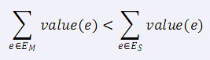

第一行包含两个整数N 和M，表示无向图的点数与边数。 接下来 M行，每行 3个数x y z 表示，点 x 和点y之间有一条边，边的权值为z。
小 C 最近学了很多最小生成树的算法，Prim 算法、Kurskal 算法、消圈算法等等。 正当小 C 洋洋得意之时，小 P 又来泼小 C 冷水了。小 P 说，让小 C 求出一个无向图的次小生成树，而且这个次小生成树还得是严格次小的，也就是说： 如果最小生成树选择的边集是 EM，严格次小生成树选择的边集是 ES，那么需要满足：(value(e) 表示边 e的权值)  这下小 C 蒙了，他找到了你，希望你帮他解决这个问题。
第一行包含两个整数N 和M，表示无向图的点数与边数。 接下来 M行，每行 3个数x y z 表示，点 x 和点y之间有一条边，边的权值为z。
包含一行，仅一个数，表示严格次小生成树的边权和。(数据保证必定存在严格次小生成树)
5 6
1 2 1
1 3 2
2 4 3
3 5 4
3 4 3
4 5 6
11数据中无向图无自环； 50% 的数据N≤2 000 M≤3 000； 80% 的数据N≤50 000 M≤100 000； 100% 的数据N≤100 000 M≤300 000 ，边权值非负且不超过 10^9 。